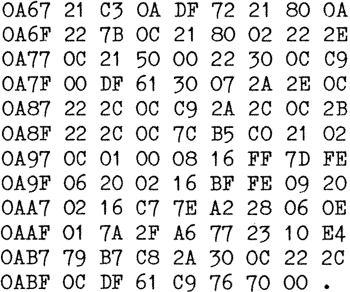

80-Bus News |
April–June 1982 · Volume 1 · Issue 2 |
| Page 20 of 55 |
|---|
Well me dearios, at last I have put Nas-Pen to printer, and what goodies flow forth?? Read on, and if you have disks, CP/M, and MONITOR.COM (the best thing since sliced Nascoms) all your old Nas-Sys software can burst back into fruity life!! Firstly, one and a half mods to MONITOR.COM itself (Gasp!), this one can only be done if your MONITOR.COM came from Nas-Sys 1 (Tee hee!).
Do ‘DDT MONITOR.COM’, then ‘S2F5’ and
replace
79 DF 60 EF 08 08 0D 00
with
EF 2E 00 79 DF 68 DF 6A
This gives you back your checksums in the Tabulate routine, separated from your bytes proper by a space and a full stop.
To change the cursor character, do your DDT etc etc, and change the byte at 0877H, which should start out as 5FH. It is quite alright to replace it with a carriage control character, they won’t control the carriage, try 07H, or even B5H if you’ve got the graphics chip.
Something for all you dedicated Nas-Crunchers (compatible) is replacing the Y (copyright) command with the repeat keyboard routine from INMC-6 (compatible). You can’t type it in directly so you need to find some mug who is willing to work out the new addresses for you. If you are too lazy even for that, then, well, I’ve done it for you.
Do all your DDT and stuff, and ‘SA67’ this lot in…

For those of you who just groaned because I’m too mean to type in the source, I’m not, it’s exactly the same as the INMC-6 (compatible) one with the addresses changed and a RET NOP replacing the original SCAL MRET. So, now the clever ones amongst you can work out how, by using the Y0 and Y1 commands, it is possible to turn the repeat on and off. You have 55 bytes to play with, that should be ample, or you could even make it execute automatically after a cold start, but note that after the workspace has been initialised.
Once you’ve MONITOR.COM installed, use the READ command to get ZEAP into your memory. DON’T let the Generate command have its evil way here, or you’ll really be in trouble, ’cos MONITOR.COM uses the old screen to hold bits of CP/M that it requires for disk transfers. If you have Generated ZEAP then you’ll have to disable the Generate command. How do you do that? Simple, you can even use Nas-Sys for this one.
| Page 20 of 55 |
|---|